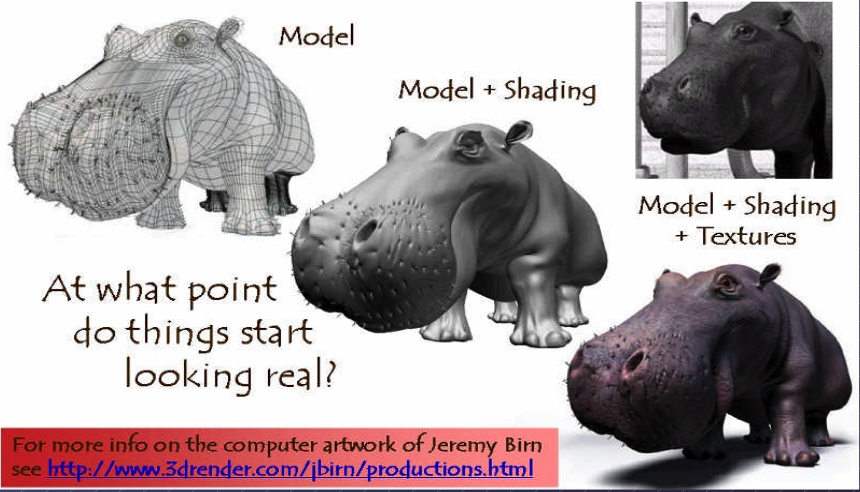
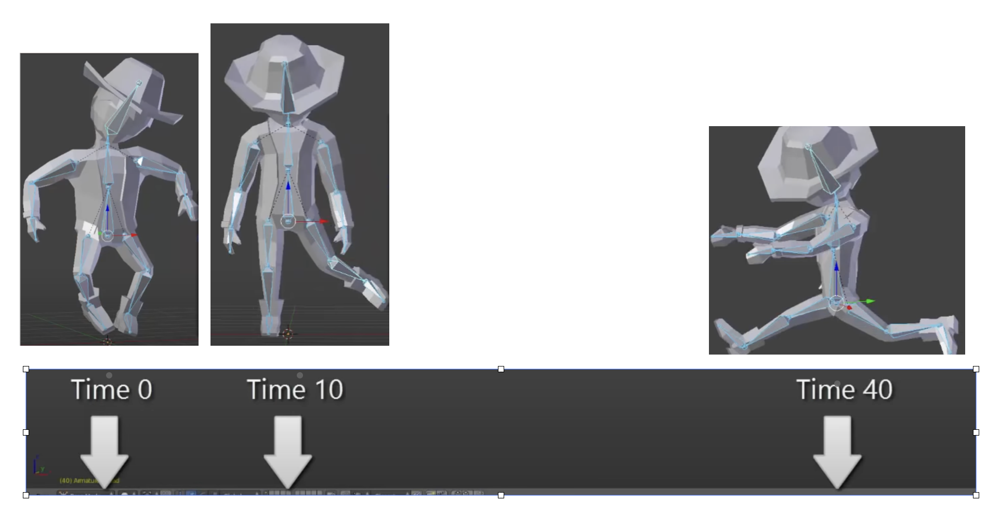
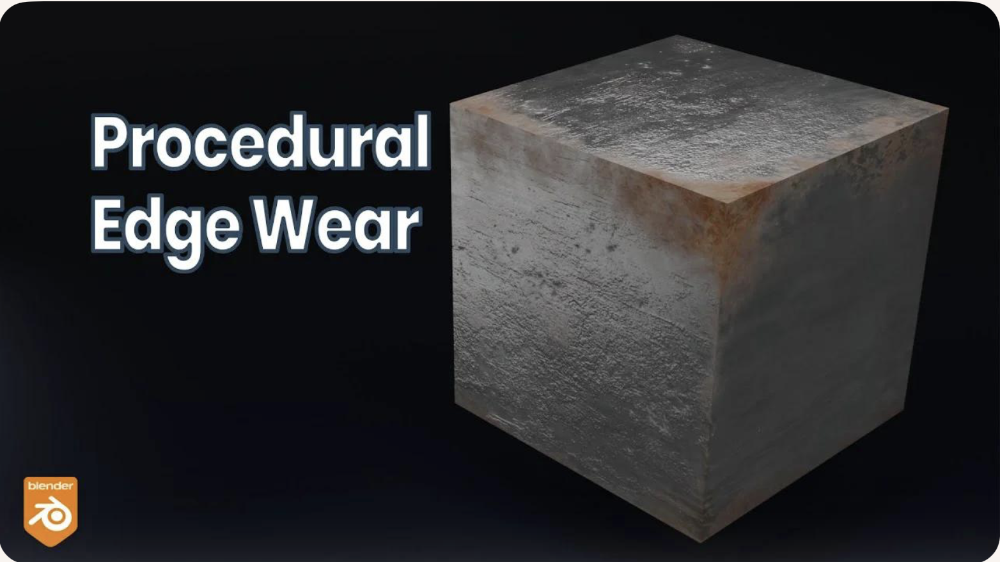
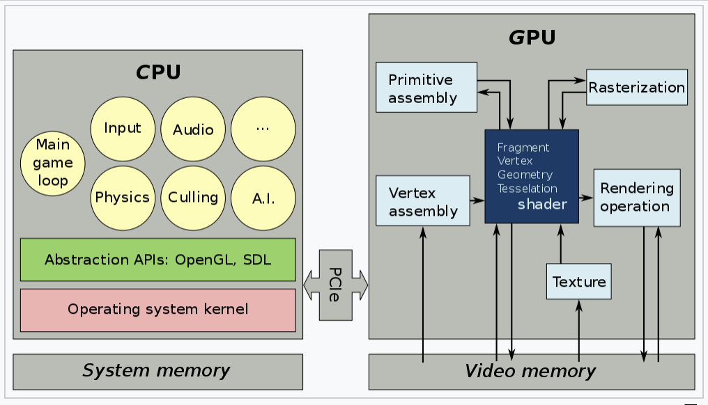
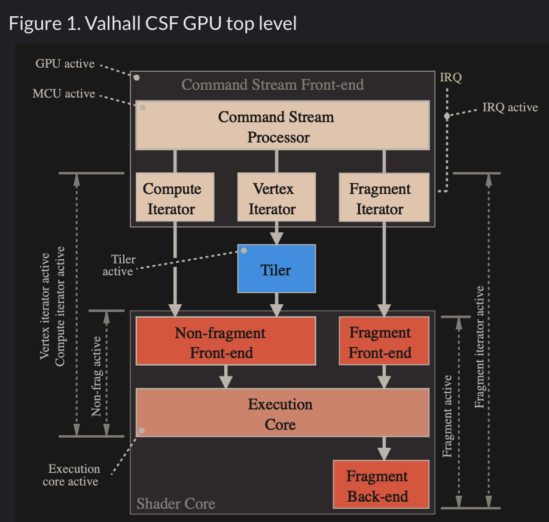
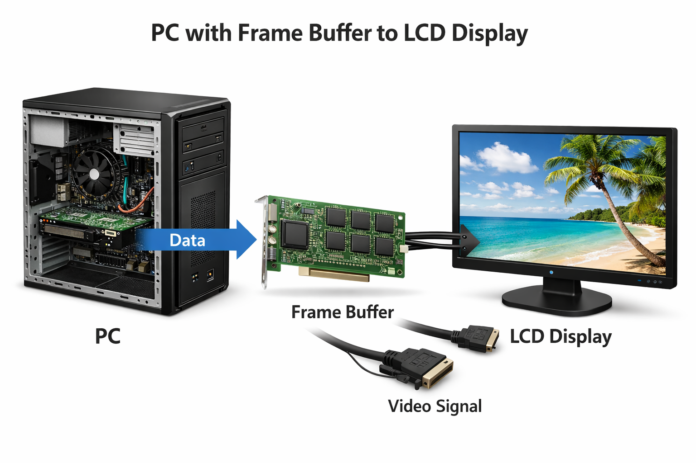
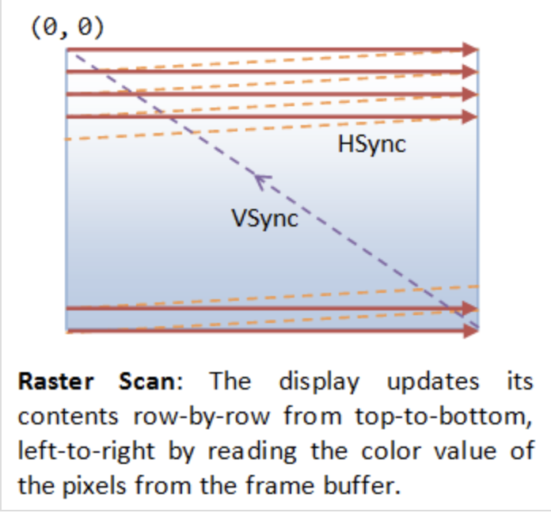

Concept in Graphics and Systems¶
3D Modeling¶
By creating 3D models with triangles or quads on a surface, the model is formed using a polygon mesh [2]. This mesh consists of all the vertices shown in the first image as Fig. 1.
{kind=link}

Fig. 1 Creating 3D model and texturing¶
After applying smooth shading [2], the vertices and edge lines are covered with color (or the edges are visually removed — edges never actually have black outlines). As a result, the model appears much smoother [3].
Furthermore, after texturing (texture mapping), the model looks even more realistic [4].
Animation¶
★ Animation Layers: High → Low
This breakdown organizes animation systems from the highest gameplay logic down to the lowest GPU skinning, and clearly marks which parts are controlled by the user and which parts are handled by the 3D engine.
Gameplay Animation Logic (High Level): set by user (game developer)
See video here [5].
Examples
Play “walk” when speed > 0.1
Trigger “jump” on button press
Switch to “attack” when enemy detected
Blend run when velocity increases
Where it lives
Live in gameplay scripts (C#, Blueprints, GDScript, Python)
Unity: C# scripts
Unreal: Blueprints or C++
Godot: GDScript
ThinMatrix: Java (no scripting layer)
This layer decides when animations should play.
Animation State Machine / Animation Graph: set by user (game developer)
Examples
Idle → Walk → Run transitions
Blend trees
Animation layers (upper body, lower body)
Animation parameters (speed, grounded, direction)
Where it lives
Unity: Animator Controller
Unreal: Animation Blueprint
Godot: AnimationTree
ThinMatrix: Does not have this layer
This layer controls which animation clip is active and how transitions occur.
Animation Clip Playback Layer: user chooses
An animation clip is a sequence of keyframes over a period of time that represents a motion or action.
Examples
Play animation clip
Loop animation
Set animation speed
Crossfade between clips
Blend two clips together
Who sets it? User chooses which clip to play.
Who implements it? Engine handles blending, timing, and playback.
Where it lives
Unity: Mecanim runtime
Unreal: AnimInstance
Godot: AnimationPlayer
ThinMatrix: Java engine code (Animator.java)
This layer executes the user’s choices.
Skeleton Animation System (Low Level): 3D engine implements it
Examples
Bone hierarchy
Keyframe interpolation
Joint transforms
Matrix palette generation
Pose calculation
Who sets it? Engine
Who uses it? User indirectly, by playing animations.
Where it lives
Unity: C++ engine core
Unreal: C++ engine core
Godot: C++ engine core
ThinMatrix: Java engine code (he writes this manually)
This layer performs the mathematical work of animation.
GPU Skinning (Lowest Level): 3D engine implements it
Examples
Vertex shader skinning
Applying bone matrices
Weighted vertex deformation
Sending matrices to GPU
Who sets it? Engine
Who uses it? User never touches this layer directly (except in custom engines).
Where it lives
Unity: C++ + HLSL
Unreal: C++ + HLSL
Godot: C++ + GLSL
ThinMatrix: GLSL shader he writes manually
This is the final stage where the GPU deforms the mesh.
Full Hierarchy (Summary)
HIGH LEVEL (User)
──────────────────────────────────────────────
1. Gameplay Animation Logic
2. Animation State Machine / Animation Graph
3. Animation Clip Playback
LOW LEVEL (Engine)
──────────────────────────────────────────────
4. Skeleton Animation System
5. GPU Skinning
Developers only write the highest‑level animation logic and designed transitions & blends as shown in Fig. 2. The engine automatically handles all lower‑level animation work. Like the video [5], Jason’s tutorials operate only in Level 1 and Level 2:
✔ Level 1 — Scripts
He writes code like:
animator.SetFloat("Speed", speed);
✔ Level 2 — State Machine
He configures transitions and parameters.
![digraph AnimationLayers {
rankdir=TB;
node [shape=box, style=rounded, fontsize=12];
High1 [label="1. Gameplay Animation Logic\n(User scripts / gameplay code)"];
High2 [label="2. Animation State Machine / Animation Graph\n(User-designed transitions & blends)"];
Mid [label="3. Animation Clip Playback\n(Engine-controlled timing & blending)"];
Low1 [label="4. Skeleton Animation System\n(Bone transforms, keyframe interpolation)"];
Low2 [label="5. GPU Skinning\n(Vertex shader applies bone matrices)"];
High1 -> High2 [label="animation intent\n(e.g., walk, run, jump)"];
High2 -> Mid [label="selected clip + blend parameters"];
Mid -> Low1 [label="sampled pose\n(bone transforms per frame)"];
Low1 -> Low2 [label="matrix palette\n(bone matrices sent to GPU)"];
}](_images/graphviz-45536928c5db99ac0e69333bfbb9e24b44f85b12.png)
Fig. 2 Animation levels¶
ThinMatrix’s engine collapses the top three layers into Java because it has no scripting layer and no animation graph, so the user must modify the engine code directly.
According to the video on ThinMatrix’s skeleton animation [6], he is sampling the animation clip at different times. The animation clip already contains: keyframes, bone transforms, timestamps, interpolation curves. All of this comes from Blender’s exported .dae file. Joints are positioned at different poses at specific times (keyframes), as illustrated in Fig. 3.
{kind=link}

Fig. 3 Get time points at keyframes¶
Although most of 3D game engines are written C++, ThinMatrix’s engine is 100% Java. In this series of videos, you will see that he writes new Java engine modules, edits existing engine code, loads animation data from Blender, interpolates keyframes, updates bone matrices and sends them to the GPU. Because ThinMatrix’s engine is tiny and educational for engine programmer or game developer, does not provide Scripting Layer (such as C#, Python, GDScript, Blueprints) most commercial 3D engines. Instead, he modifies ThinMatrix’s Java engine directly, which differs from most other 3D engines operate.
Animation flow
Every modern 3D animation tool comes with its own built‑in render engine, and often more than one. In 3D game design, game engines (Unity, Unreal, Godot) use real‑time engines for real-time animation.
Pipeline: Blender → Engine → OpenGL
+------------------+
| Blender |
| (Modeling Tool) |
+------------------+
|
| Exports assets:
| - Meshes (.obj, .fbx, .gltf)
| - Armatures / bones
| - Animations (keyframes)
| - Textures (PNG, EXR, TGA)
v
+---------------------------+
| Game Engine |
| (Unity, Unreal, Godot, |
| LWJGL, JOGL, Custom) |
+---------------------------+
|
| Engine loads assets:
| - Parses mesh data
| - Loads skeletons
| - Loads animation curves
| - Loads materials/shaders
|
| Engine code you write:
| - Java (JOGL/LWJGL)
| - C++ (custom engine)
| - C# (Unity)
| - GDScript/C++ (Godot)
|
| Engine compiles shaders:
| - GLSL (OpenGL)
| - HLSL (DirectX)
| - SPIR-V (Vulkan)
v
+---------------------------+
| Renderer |
| (OpenGL / Vulkan / |
| DirectX / Metal) |
+---------------------------+
|
| GPU receives:
| - Vertex buffers
| - Index buffers
| - Textures
| - Uniforms (matrices, bones)
| - Compiled shaders
v
+---------------------------+
| GPU |
| (Vertex Shader → Raster → |
| Fragment Shader → Frame) |
+---------------------------+
|
v
+---------------------------+
| Final Image |
| (On your screen) |
+---------------------------+
Note
- 3D modeling tools do store animation and movement data
— but they do NOT store any rendering or API‑specific code.
- Game engines do store animation data
— but programmers still write the logic that plays, blends, and controls those animations.
Animation Data vs. Movement Speed in Games
List the animation types in a table for inclusion in this book.
Animation Type |
What Moves |
Description |
GPU Requirement |
|---|---|---|---|
Transform Animation |
Object transform |
The entire mesh moves as a rigid body using position, rotation, and scale. No vertex-level deformation occurs. |
Optional (fixed-function or shaders) |
Skinning |
Vertex positions |
Vertices are blended by bone matrices to deform the mesh (arms bending, legs walking). Requires per-vertex matrix blending. |
Requires shaders |
Morph Target Animation |
Vertex positions |
Vertices blend between multiple stored shapes (facial expressions, muscle bulges). Uses morph weights to interpolate. |
Requires shaders |
Procedural Deformation |
Vertex positions |
Vertices are modified by mathematical functions (wind, waves, noise, squash-and-stretch). Driven by time or simulation parameters. |
Requires shaders |
Example: Walking Animation: Skinning + Transform Animation
When a character walks in a game, the animation is produced by two different systems working together:
Skinning (Bone Animation) Skinning is responsible for deforming the mesh. It drives the motion of limbs such as legs, arms, spine, and feet. Without skinning, the character would move as a rigid statue with no bending or articulation.
Transform Animation (Rigid-Body Movement) Transform animation moves the entire character through the world. This includes translation, rotation, and root motion. Without transform animation, the character would walk in place without actually moving forward.
Root bone: the bone that represents the entire object’s transform — the top‑most parent of the hierarchy. An example of person:
Root
└─ Pelvis
├─ Spine
│ ├─ Chest
│ │ ├─ Neck
│ │ │ └─ Head
│ │ └─ Shoulders
│ │ ├─ Arm_L
│ │ └─ Arm_R
├─ Leg_L
└─ Leg_R
Both systems are required to create a complete walking animation:
Skinning provides the internal limb motion.
Transform animation provides the external world-space movement.
Together, they produce the final effect of a character walking naturally through the environment.
The following explains what animation data 3D modeling tools store, what game engines store, and what programmers must implement manually. It also clarifies the relationship between animation curves, movement speed, and gameplay logic.
What 3D Modeling Tools Actually Store
3D modeling and animation tools such as Blender, Maya, and 3ds Max store animation data, not gameplay logic.
They do store:
Keyframes (frame 0, frame 10, frame 24, etc.)
Bone transforms at each keyframe
Interpolation curves (Bezier, linear, quaternion)
Animation duration (e.g., 1.2 seconds)
Frame rate (e.g., 24 fps)
Skeleton hierarchy
Skin weights (vertex-to-bone influences)
Optional root bone motion (displacement over time)
Modeling tools produce data, not rendering code and not gameplay rules in OpenGL/DirectX code.
Example:
Bone "Arm" rotation at frame 0 = (0°, 0°, 0°)
Bone "Arm" rotation at frame 10 = (45°, 0°, 0°)
What Game Engines Actually Store
The engine’s built‑in C++ renderer handles all OpenGL/Vulkan/Metal calls automatically. Game engines such as Unity, Unreal Engine, Godot, or custom engines store and manage animation data, but still do not define gameplay movement speed.
They do store:
Animation clips
State machines (Idle → Walk → Run)
Blend trees
Transition rules
Animation events
Curves for rotation, scaling, and root motion
Again: data, not OpenGL/DirectX code.
Example:
If speed < 0.1 → Idle
If speed > 0.1 → Walk
If speed > 4.0 → Run
This is engine logic, not GPU code.
Game engines interpret animation data but rely on programmer logic to control how characters move in the world.
What Programmers Must Implement
Programmers write the logic that uses animation data to move objects.
Examples:
In Unity (C#)
animator.SetFloat("speed", playerVelocity);
...
float speed = 3.5f;
transform.position += direction * speed * Time.deltaTime;
In a custom engine (C++/OpenGL)
shader.setMatrix("boneMatrices[0]", boneMatrix);
...
float velocity = 3.5f;
position += velocity * deltaTime;
In JOGL/LWJGL (Java)
glUniformMatrix4fv(boneLocation, false, boneMatrixBuffer);
...
float velocity = 3.5f;
position += velocity * deltaTime;
Programmers write:
Programmers implement:
Movement speed
E.g. Set the value for speed or velocity as the code above.
Acceleration and deceleration
Physics integration
AI movement
Player input
Animation blending logic
Uploading bone matrices to the GPU
GLSL shader code for skinning
Animation data is used by code, not replaced by it.
Root Motion vs. Movement Speed
Some animations include root motion, where the root bone moves forward during a walk cycle. Modeling tools export this as bone displacement over time, but they still do not define speed.
Example:
If the root bone moves 1 meter in 0.5 seconds, the engine can compute:
speed = 1m / 0.5s = 2 m/s
However:
Blender does not store “2 m/s”
The engine derives speed from displacement
Programmers decide whether to use root motion or in-place animation
Summary Table
Concept |
Stored in Blender? |
Stored in Engine? |
Controlled by Programmer? |
|---|---|---|---|
Keyframes |
Yes |
Yes |
No |
Bone transforms |
Yes |
Yes |
No |
Animation length |
Yes |
Yes |
No |
Movement speed |
No |
Yes (derived) |
Yes |
Physics movement |
No |
Yes |
Yes |
AI movement |
No |
Yes |
Yes |
Final Clarification
3D modeling tools store animation timing, not gameplay speed.
Game engines store animation clips, not movement speed.
Programmers control movement speed, physics, and gameplay behavior.
No tool generates JOGL/OpenGL/Vulkan/DirectX code.
All rendering API calls are written by engine developers or by you in a custom engine.
Example for accelerating playing
Animation Speed vs Engine Rendering (5× Speed)
The following table shows how animation playback, movement speed, and GPU rendering interact when the gameplay speed is multiplied by five. The animation remains 24 fps internally, but its playback time advances five times faster. The GPU continues to render at 60 fps and samples the animation at the current time.
Property |
Original Value |
After 5× Speed |
|---|---|---|
Animation FPS (baked) |
24 fps |
24 fps (unchanged) |
Animation Playback Speed |
1× |
5× |
Steps per Second |
6 steps/sec |
30 steps/sec |
Movement Speed |
6 m/sec |
30 m/sec |
GPU Rendering FPS |
60 fps |
60 fps |
Engine Playing Frames (What GPU Displays) |
Samples animation at 60 fps |
Samples animation at 60 fps (skips/interpolates intermediate animation frames) |
Summary:
The animation does not become 120 fps; it is simply played 5× faster.
The runner appears to take 30 steps per second and move 30 meters per second.
The GPU still renders 60 frames per second.
The engine samples the animation at each rendered frame, so it effectively displays every fifth animation sample, using interpolation for smoothness. For this case, it may display 1 out of 2 animation frames from 3D modeling.
Node-Editor (shaders generator)¶
3D animation tools (Blender, Maya, Houdini) use render engines and node editors for materials, lighting, and effects.
Game engines (Unity, Unreal, Godot) use real‑time engines and node editors for shaders, VFX, and sometimes logic.
A node editor defines the entire material that is applied to the surface of a 3D object. The shader generated from the node graph runs on every pixel (fragment) of the object’s surface. In this sense, the node editor controls the whole surface, not only a specific region.
However, the node graph can include masks, textures, vertex colors, or procedural patterns that allow the artist to specify which parts of the surface receive a particular effect. These masks do not limit the shader to only part of the surface; instead, they instruct the shader how to behave differently across different regions.
Node-Editor¶
Example
Let’s say you want:
rust only on the edges
metal everywhere else
In the node editor:
Load a rust texture
Load a metal texture
Use a mask (curvature or hand-painted)
Mix them using a Mix node
The shader still runs on the whole surface, but the mask tells it:
“Use rust here”
“Use metal here”
In summary:
The node editor defines the full material for the entire surface.
Artists can use masks or textures to target specific areas within that surface.
The shader still executes globally, but its output varies based on the mask inputs.
Thus, a node editor controls the whole surface, while masks determine how different parts of that surface are shaded.
For 3D video game engines, the only case where mask data is inside the model file is vertex colors. Everything else lives in textures or material/shader assets.
Procedural Rust on Edges Using Shader Nodes
To demonstrate how to create a rust-on-edges material using Blender’s shader node editor as shown in Fig. 4. The goal is to reproduce the effect commonly used on metal containers: clean metal on flat surfaces and rust accumulation along exposed edges.
{kind=link}

The technique relies on three core ideas:
Detecting edges using the Bevel or Pointiness attribute.
Creating a mask that isolates only the worn edges.
Blending a rust material with a metal material using that mask.
This workflow is fully procedural and does not require painting or external textures.
Procedural Edge Wear Node Graph (ASCII Diagram) to create Fig. 4 in video [8] includes 1. edge detection, 2. mask breakup, 3. material creation, and 4. final blending as follows:
+================================================================+
| 1. EDGE DETECTION BLOCK |
| (Generating an Edge-Wear Mask) |
+================================================================+
Geometry Node
|
|----> Pointiness (Cycles only)
|
Bevel Node (Eevee/Cycles)
Radius = 0.01–0.03
|
v
ColorRamp (Sharpen edge highlight)
|
v
Edge Mask (base convex-edge detection)
+================================================================+
| 2. MASK BREAKUP / RANDOMIZATION BLOCK |
| (Refining the Mask With Noise Textures) |
+================================================================+
Noise Texture (Scale 5–15)
|
v
ColorRamp (optional shaping)
|
v
Multiply Node <---------------- Edge Mask
|
v
ColorRamp (final threshold control)
|
v
Final Edge Wear Mask
material creation
+================================================================+
| 3. MATERIAL BLOCK |
| (Base Material Structure) |
+================================================================+
METAL MATERIAL:
Principled BSDF
Metallic = 1.0
Roughness = 0.2–0.4
RUST MATERIAL:
Principled BSDF
Base Color = orange/brown
Roughness = 0.7–1.0
Optional Noise → color variation
Optional Bump → rust height
+================================================================+
| 4. BLENDING BLOCK |
| (Blending Metal and Rust Materials) |
+================================================================+
Metal BSDF ----------------------+
|
v
Mix Shader ----> Material Output
^
|
Rust BSDF -----------------------+
|
|
Final Edge Wear Mask (Fac)
Code Generation from Node-Editor¶
Node-based shader editors are visual tools used in modern game engines and DCC (Digital Content Creation) software. They allow users to build shaders by connecting nodes instead of writing GLSL, HLSL, or Metal code manually. These editors do generate shader code automatically.
Node-Based Editors Do Generate Shader Code
Node-based shader editors such as:
Unity Shader Graph
Unreal Engine Material Editor
Godot Visual Shader Editor
Blender Shader Nodes (for Eevee/Cycles)
all compile the visual node graph into real shader code.
Depending on the engine, the generated code may be:
GLSL (OpenGL / Vulkan)
HLSL (DirectX)
MSL (Metal)
SPIR-V (Vulkan intermediate format)
The generated code is usually not shown to the user, but it is compiled and sent to the GPU at runtime.
How Users Generate Shader Code with Nodes
The workflow for generating shader code through a node editor typically looks like this:
The user opens the shader editor.
The user creates nodes representing:
math operations (add, multiply, dot product)
texture sampling
Determine FS.
lighting functions
color adjustments
UV transformations
The user connects nodes visually to define the shader logic.
Defines surface color,lighting, and texture sampling → determine FS.
For simple deformations (waves, wind, dissolve) → determine the VS.
Generate both TCS and TES code for displacement and subdivision control.
GS code is typically written manually by graphics programmers since primitives culling and clipping are not related with model resolution and texture materials.
The engine converts the node graph into an internal shader representation.
The engine compiles this representation into platform-specific shader code (GLSL, HLSL, MSL, or SPIR-V).
The compiled shader is sent to the GPU and used for rendering.
The user never writes the shader code directly; the editor generates it automatically.
Who Is the “User” of Node-Based Editors?
The typical users of node-based shader editors are:
- Graphics Designers / Technical Artists
Primary users.
They create visual effects, materials, and surface shaders.
They usually do not write GLSL or HLSL manually.
Node editors allow them to work visually without programming.
- Software Programmers / Graphics Programmers
Secondary users.
They may create custom nodes or extend the shader system.
They write low-level shader code when needed.
They integrate the generated shaders into the rendering pipeline.
In most workflows:
Graphics designers build the shader visually.
The engine generates the shader code.
Programmers handle advanced logic, optimization, or custom nodes.
Summary
Node-based shader editors do generate shader code automatically.
Users generate shaders by connecting visual nodes rather than writing GLSL/HLSL manually.
The primary “user” is the graphics designer or technical artist.
Programmers support the system by writing custom nodes or low-level shaders when needed.
The shaders introduction is illustrated in the next section OpenGL.
3D Modeling Tools¶
Every CAD software manufacturer, such as AutoDesk and Blender, has their own proprietary format. To solve interoperability problems, neutral or open source formats were created as intermediate formats to convert between proprietary formats.
Naturally, these neutral formats have become very popular. Two famous examples are STL (with a .STL extension) and COLLADA (with a .DAE extension). Below is a list showing 3D file formats along with their types.
3D file format |
Type |
|---|---|
STL |
Neutral |
OBJ |
ASCII variant is neutral, binary variant is proprietary |
FBX |
Proprietary |
COLLADA |
Neutral |
3DS |
Proprietary |
IGES |
Neutral |
STEP |
Neutral |
VRML/X3D |
Neutral |
The four key features a 3D file can store include the model’s geometry, the model’s surface texture, scene details, and animation of the model [9].
Specifically, they can store details about four key features of a 3D model, though it’s worth bearing in mind that you may not always take advantage of all four features in all projects, and not all file formats support all four features!
3D printer applications do not to support animation. CAD and CAM such as designing airplane does not need feature of scene details.
DAE (Collada) appeared in the video animation above. Collada files belong to a neutral format used heavily in the video game and film industries. It’s managed by the non-profit technology consortium, the Khronos Group.
The file extension for the Collada format is .dae. The Collada format stores data using the XML mark-up language.
The original intention behind the Collada format was to become a standard among 3D file formats. Indeed, in 2013, it was adopted by ISO as a publicly available specification, ISO/PAS 17506. As a result, many 3D modeling programs support the Collada format.
That said, the consensus is that the Collada format hasn’t kept up with the times. It was once used heavily as an interchange format for Autodesk Max/Maya in film production, but the industry has now shifted more towards OBJ, FBX, and Alembic [9].
Graphics HW and SW Stack¶
This section provides a more detailed illustration of animation accross the software and hardware stacks on both CPU and GPU, and explains how data flows between the CPU, the GPU, and each layer of the software stack.
In the previous section 3D Modeling, described what information 3D models store and how this information is used to perform animation.
In the incoming section SW Stack and Data Flow will describe how each frame is generated to display the movement animation or skinning effects using the small animation parameters stored in 3D model and sent from CPU.
The the incoming section Role and Purpose of Shaders will explain different visual effects can be achieved by switching shaders to shapplying different materials across frames.
Reference:
HW Block Diagram¶
The block diagram of the Graphic Processing Unit (GPU) is shown in Fig. 5.

Fig. 5 Components of a GPU: GPU has accelerated video decoding and encoding [10]¶
The roles of the CPU and GPU in graphic animation are illustrated in Fig. 6.
{kind=link}

Fig. 6 OpenGL and Vulkan are both rendering APIs. In both cases, the GPU executes shaders, while the CPU executes everything else [11].¶
GPU can’t directly read user input from, say, keyboard, mouse, gamepad, or play audio, or load files from a hard drive, or anything like that. In this situation, cannot let GPU handle the animation work [12].
A graphics driver consists of an implementation of the OpenGL state machine and a compilation stack to compile the shaders into the GPU’s machine language. This compilation, as well as pretty much anything else, is executed on the CPU, then the compiled shaders are sent to the GPU and are executed by it. (SDL = Simple DirectMedia Layer) [13].
{kind=link}

Fig. 7 MCU and specific HW circuits to speedup the processing of CSF (Command Stream Fronted) [14].¶
The GPU driver write command and data from CPU to GPU’s system memory through PCIe. These commands are called Command Stream Fronted (CSF) in the memory of GPU. A chipset of GPU includes tens of SIMD processors (cores). In order to speedup the GPU driver’s processing, the CSF is designed to a simpler form. As result, GPU chipset include MCU (Micro Chip Unit) and specfic HW to transfer the CSF into individual data structure for each SIMD processor to execute as Fig. 7. The firmware version of MCU is updated by MCU itself usually.
SW Stack and Data Flow¶
The driver runs on the CPU side as shown in Fig. 8. The OpenGL API eventually calls the driver’s functions, and the driver executes these functions by issuing commands to the GPU hardware and/or sending data to the GPU.
Even so, the GPU’s rendering work, which uses data such as 3D vertices and colors sent from the CPU and stored in GPU or shared memory, consumes more computing power than the CPU.
![digraph G {
rankdir=LR;
compound=true;
node [shape=record];
subgraph cluster_cpu {
label = "CPU (Client)";
CPU_SW [label=" 3D Model | Game Engine | { OpenGL API | Shaders \n (buitin-functions)} | <f1> Driver"];
}
subgraph cluster_gpu {
label = "GPU HW (Server)";
subgraph cluster_gpu_sw {
label = "3D Rendering pipeline \ndescribed in the later section";
ModelData [label="3D Model Information\n(VAO, VBO, textures,\nindex buffers, materials)"];
}
}
CPU_SW:f1 -> ModelData [label="1. Creating Mesh:\nVAO, texture, ..., from 3D model, \n shader-exectuable-code."];
// label = "Graphic SW Stack";
}](_images/graphviz-f68d21d8824f0290fd22ec1bce98b7844e0cd67c.png)
Fig. 8 Graphic SW Stack and data flow in initializing graphic model¶
✅ As section Animation and Fig. 8. The game engine’s built‑in C++ renderer handles all OpenGL/Vulkan/Metal calls automatically. Users set the value for speed, velocity, …, etc, customize the animation logic.
After the user creates a skeleton and textures for each model and sets keyframe times using a 3D modeling tool, users can write gameplay scripts (Java code, C#, Blueprints, GDScript, Python, etc.) to tell the engine to play animations [7].
As section Node-Editor (shaders generator), the skin materials created by Graphics Designers / Technical Artists and secondly created by Software Programmers / Graphics Programmers using the tool Node-Editor (shaders generator). As result, shaders generated from tool Node-Editor (shaders generator).
Shaders may call built-in functions written in Compute Shaders, SPIR-V, or LLVM-IR. LLVM libclc is a project for OpenCL built-in functions, which can also be used in OpenGL [15]. Like CPU built-ins, new GPU ISAs or architectures must implement their own built-ins or port them from open source projects like libclc.
The 3D model on the CPU performs these animations in movement and others by computing each frame from the stored keyframes, as illustrated in animation section Animation.
![digraph G {
rankdir=LR;
compound=true;
node [shape=record];
subgraph cluster_cpu {
label = "CPU (Client)";
CPU_SW [label=" 3D Model | Game Engine | { OpenGL API | Shaders \n (buitin-functions)} | <f1> Driver"];
}
subgraph cluster_gpu {
label = "GPU HW (Server)";
subgraph cluster_gpu_sw {
label = "3D Rendering pipeline \ndescribed in the later section";
ModelData [label="3D Model Information\n(VAO, VBO, textures,\nindex buffers, materials)"];
UniformUpdates [label="Uniform Updates\n(bone matrices, morph weights,\nmaterial params, time, etc.\nsee Note below)", style=filled, fillcolor=lightgreen, color="black"];
}
}
CPU_SW:f1 -> UniformUpdates [label="2. Animation: \nDraw command and Uniform Updates\nfor each frame rendering"];
// label = "Graphic SW Stack";
}](_images/graphviz-a6d2e2b7ac57f8aeb220fcaf2a369ecb17bd2ae1.png)
Fig. 9 Graphic SW Stack and data flow in rendering¶
The per-frame data is not the full set of vertices, but rather a small set of animation parameters named Uniform Updates as appeared in Fig. 9, which are described later.
Note
Bone matrices determine the positions of triangles within a 3D model during animation. This bone transformation data is much smaller than the complete mesh of the 3D model. We will provide an example and explain this in more detail in the Animation Example section. Because this transformation data is small and constant across all shader pipeline stages, it is stored in the GPU’s global memory and can be cached in the uniform/constant cache for performance, as illustrated in Fig. 64 of Processor Units and Memory Hierarchy in NVIDIA GPU 15 section.
The CPU updates only these small animation parameters and issues draw command to the GPU server side.
![digraph GPU_Pipeline {
rankdir=LR;
node [shape=box, style=rounded, fontsize=12];
UniformUpdates [label="Uniform Updates\n(bone matrices, morph weights,\nmaterial params, time, etc.)"];
ModelData [label="3D Model Information\n(VAO, VBO, textures,\nindex buffers, materials)"];
GPURendering [label="GPU Rendering\n(vertex shader, fragment shader,\nskinning, morphing, rasterization)"];
Framebuffer [label="Framebuffer\n(Video Memory Output)"];
UniformUpdates -> GPURendering;
ModelData -> GPURendering;
GPURendering -> Framebuffer [label="Rendered Image"];
}](_images/graphviz-d6333f1b3113b281a0bcd814b1a30a59b6fe0644.png)
Fig. 10 The input and output for GPU rendering¶
Next, the 3D Rendering-pipeline is illustrated in Fig. 10.
The shape of object data are stored in the form of VAOs (Vertex Array Objects) in OpenGL. This will be explained in a later section OpenGL. Additionally, OpenGL provides VBOs (Vertex Buffer Objects), which allow vertex array data to be stored in high-performance graphics memory on the server side GPU and enable efficient data transfer [16] [17].
After GPU receives the Uniform Updates from CPU, it performs the computationally intensive per‑vertex work within the rendering pipeline to generate the final pixel values for each frame displayed on screen. These final pixel values are collectively referred to the Rendered Image.
✅ “Rendered Image” = the final per‑frame output written into the framebuffer. The Uniform Updates will be described in detail later.
✅ CPU only updates small animation parameters named Uniform Updates as appeared in Fig. 9; GPU computes the heavy per‑vertex work.
As mentioned in the previous section on animation movement, 3D modeling tools store Keyframes, bone transforms at each keyframe and related data, and perform animation based on this information.
The CPU updates only the bone transformation data …, rather than updating the entire vertex or mesh data for each animation frame. These updates are very small—on the order of kilobytes rather than megabytes. For each rendered frame, the CPU sends these small updates to the GPU, and the GPU takes over the animation work from the CPU. This type of movement animation is called skinning, and is illustrated as follows:
Skinning
Skinning is a vertex deformation technique used to animate a mesh by attaching its vertices to a hierarchical skeleton (bones). Each vertex stores one or more bone indices and corresponding weights that describe how strongly each bone influences that vertex.
During animation, the application updates the bone transformation matrices. The vertex shader then computes the final vertex position by blending the transformed positions according to the stored weights. This allows the mesh to bend, twist, and deform smoothly as the skeleton moves.
Skinning does not create new geometry or smooth the surface topology. It only transforms the existing vertices of the mesh. Examples include bending an arm, flapping a wing, or deforming a flexible tube as its bones rotate.
CPU only update high‑level animation state, such as:
Current animation time
Bone matrices (small)
Morph weights
Material parameters
Particle emitter settings
Global uniforms (camera, lights, etc.)
These are tiny updates — kilobytes, not megabytes.
In practice (real engines): the weights are normalized so the sum = 1.0 \(\Rightarrow \sum_{i=0}^{N-1}\mathbf{weight}_i = 1.0\)
Example: Bending an Arm
Imagine a character’s arm mesh. Each vertex in the elbow area has weights like:
70% influenced by upper‑arm bone
30% influenced by lower‑arm bone
When the elbow bends:
Upper‑arm bone rotates
Lower‑arm bone rotates
GPU blends the influence
The elbow area deforms smoothly
This is skinning.
✅ After the GPU animation, the color pixels are write to framebuffer (video memory). The display device (monitor, LCD, OLED, etc.) fetches these pixels and displays them on the screen. The interface between framebuffer and display device is explained in the next section Pixels Displaying.
Pixels Displaying¶
The interface between frame buffer and displaying device is shown as Fig. 11.
{kind=link}

Fig. 11 PC with Frame Buffer to LCD Display¶
GPU and screen (monitor, LCD, OLED, etc.) use VSync, NVIDIA G-SYNC or AMD FreeSync to prevent screen tearing, as described below:
{kind=link}

Fig. 12 VSync¶
VSync
No tearing occurs when the GPU and display operate at the same refresh rate,
since the GPU refreshes faster than the display as shown below.
A B
GPU | ----| ----|
Display |-----|-----|
B A
Tearing occurs when the GPU has exact refresh cycles but VSync takes
one more cycle than the display as shown below.
A
GPU | -----|
Display |-----|-----|
B A
To avoid tearing, the GPU runs at half the refresh rate of the display,
as shown below.
A B
GPU | -----| | -----|
Display |-----|-----|-----|-----|
B B A A
Double Buffering
While the display is reading from the frame buffer to display the current frame, we might be updating its contents for the next frame (not necessarily in raster-scan manner). This would result in the so-called tearing, in which the screen shows parts of the old frame and parts of the new frame. This could be resolved by using so-called double buffering. Instead of using a single frame buffer, modern GPU uses two of them: a front buffer and a back buffer. The display reads from the front buffer, while we can write the next frame to the back buffer. When we finish, we signal to GPU to swap the front and back buffer (known as buffer swap or page flip).
VSync
Double buffering alone does not solve the entire problem, as the buffer swap might occur at an inappropriate time, for example, while the display is in the middle of displaying the old frame. This is resolved via the so-called vertical synchronization (or VSync) at the end of the raster-scan. When we signal to the GPU to do a buffer swap, the GPU will wait till the next VSync to perform the actual swap, after the entire current frame is displayed.
As above text digram. The most important point is: When the VSync buffer-swap is enabled, you cannot refresh the display faster than the refresh rate of the display!!! If GPU is capable of producing higher frame rates than the display’s refresh rate, then GPU can use fast rate without tearing. If GPU has same or less frame rates then display’s and you application refreshes at a fixed rate, the resultant refresh rate is likely to be an integral factor of the display’s refresh rate, i.e., 1/2, 1/3, 1/4, etc. Otherwise it will cause tearing [1].
NVIDIA G-SYNC and AMD FreeSync
If your monitor and graphics card both in your customer computer support NVIDIA G-SYNC, you’re in luck. With this technology, a special chip in the display communicates with the graphics card. This lets the monitor vary the refresh rate to match the frame rate of the NVIDIA GTX graphics card, up to the maximum refresh rate of the display. This means that the frames are displayed as soon as they are rendered by the GPU, eliminating screen tearing and reducing stutter for when the frame rate is both higher and lower than the refresh rate of the display. This makes it perfect for situations where the frame rate varies, which happens a lot when gaming. Today, you can even find G-SYNC technology in gaming laptops!
AMD has a similar solution called FreeSync. However, this doesn’t require a proprietary chip in the monitor. In FreeSync, the AMD Radeon driver, and the display firmware handle the communication. Generally, FreeSync monitors are less expensive than their G-SYNC counterparts, but gamers generally prefer G-SYNC over FreeSync as the latter may cause ghosting, where old images leave behind artifacts [18].
The Role and Purpose of Shaders¶
The flow for 3D/2D graphic processing is shown in Fig. 13.
![digraph G {
rankdir=LR;
compound=true;
node [shape=record];
subgraph cluster_3d {
label = "3D/2D modeling software";
subgraph cluster_code {
label = "3D/2D's code: engine, shader, ...";
Api [label="<a> OpenGL API | <s> Shaders (3D animation's shaders \n or programmer writing shaders"];
}
}
subgraph cluster_driver {
label = "Driver"
Compiler [label="On-line Compiler"];
Obj [label="obj"];
Linker [label="On-line binding (Linker)"];
Exe [label="exe"];
}
Api:a -> Obj [lhead ="cluster_driver"];
Api:s -> Compiler;
Compiler -> Obj -> Linker -> Exe;
Exe -> GPU;
Exe -> CPU [ltail ="cluster_driver"];
// label = "OpenGL Flow";
}](_images/graphviz-29b74583c3e465d018bacd232ea22179b015deb8.png)
Fig. 13 OpenGL Flow¶
The compiled shaders are sent to the GPU when you call glLinkProgram(). That is the moment the driver uploads the compiled shader binaries into GPU‑executable form.
The glLinkProgram() is called when you finish preparing a shader program — not when creating a mesh, and not when issuing a draw command.
When a game actually call glLinkProgram() to re-link the shader, the shader need to be compiled and load to GPU.
Usually it is happend in game startup, level load, or creating a new shader variant (e.g., enabling shadows, fog, skinning).
Games switch shaders constantly — sometimes hundreds of times per frame — but they do not re‑link them.
When playing a video game, different materials, effects and rendering passes will applying to difference shaders.
Examples of switching shaders:
When the player enters a snowy biome, ice meshes use the ice shader.
The axe blade uses a metal PBR shader. Sparks fly when the axe blade hits stone it switch to particle shader.
Basic geometry in computer graphics¶
This section introduces the fundamental geometry mathematics used in computer graphics. As discussed in the previous sections, 3D animation primarily based on geometric representations such as meshes (vertices) and surface discriptions including textures, materials, shaders, and lighting models created in 3D content creation tools. Consequently, vertex tranformations and lighting-based color computations form the mathematical foundation of modern computer graphics and animation.
The complete concept can be found in the book Computer Graphics: Principles and Practice, 3rd Edition, authored by John F. et al. However, the book contains over a thousand pages.
It is very comprehensive and may take considerable time to understand all the details.
Color¶
In the case of paints, additive colors produce shades and become light gray due to the addition of darker pigments [21].

Fig. 14 Additive colors in light¶
Note
Additive colors
I know it doesn’t match human intuition. However, additive RGB colors in light combine to produce white light, while additive RGB in paints result in light gray paint. This makes sense because light has no shade. This result stems from the way human eyes perceive color. Without light, no color can be sensed by the eyes.
Computer engineers should understand that exploring the underlying reasons falls into the realms of physics or the biology of the human eye structure.
Transformation¶
Overview
The tranformation matrices have been taught in high school and college. However this mathematical details are not always retained clearly in memory. The following section reviews the parts relevant to graphics rendering.
In both 2D and 3D graphics, every object transformation is performed by multiplying the object’s vertex coordinates by one or more transformation matrices. Modern OpenGL uses homogeneous coordinates and 4×4 matrices to unify translation, rotation, scaling, projection, and even animation (skinning) into a single mathematical framework.
A vertex in 3D is represented as:
A transformation is applied by matrix multiplication:
Multiple transformations are combined by multiplying matrices:
Where:
M= Model matrix (object → world)V= View matrix (world → camera)P= Projection matrix (camera → clip space)
This is the core of the OpenGL rendering pipeline, as shown in Fig. 15.

Model space: The is the vertices position mentioned under Root bone in Animation flow. All vertex coordinates are calcuated relative to the root bone.
Model Rranform:
M= Model matrix (object → world). This represents the vertex positions mentioned under Transform Animation in Animation flow.
Details for Fig. 15 can be found on “4. Vertex Processing” of the website [1].
Transformation Matrices [22]
Translation: Moves an object in 3D space.
\(T(x,y,z)=\begin{bmatrix}1&0&0&x\\0&1&0&y\\0&0&1&z\\0&0&0&1\end{bmatrix} \begin{bmatrix}X\\Y\\Z\\1\end{bmatrix} = \begin{bmatrix}X+x\\Y+y\\Z+z\\1\end{bmatrix}\)
Scaling: Resizes an object.
\(S(s_x,s_y,s_z)=\begin{bmatrix}s_x&0&0&0\\0&s_y&0&0\\0&0&s_z&0\\0&0&0&1\end{bmatrix} \begin{bmatrix}X\\Y\\Z\\1\end{bmatrix} = \begin{bmatrix}s_x X\\s_y Y\\s_z Z\\1\end{bmatrix}\)
Rotation X: Rotates around the X-axis.
\(R_x(\theta)=\begin{bmatrix}1&0&0&0\\0&\cos\theta&-\sin\theta&0\\0&\sin\theta&\cos\theta&0\\0&0&0&1\end{bmatrix} \begin{bmatrix}X\\Y\\Z\\1\end{bmatrix} = \begin{bmatrix}X\\Y\cos\theta - Z\sin\theta\\Y\sin\theta + Z\cos\theta\\1\end{bmatrix}\)
Rotation Y: Rotates around the Y-axis.
\(R_y(\theta)=\begin{bmatrix}\cos\theta&0&\sin\theta&0\\0&1&0&0\\-\sin\theta&0&\cos\theta&0\\0&0&0&1\end{bmatrix} \begin{bmatrix}X\\Y\\Z\\1\end{bmatrix} = \begin{bmatrix}X\cos\theta + Z\sin\theta\\Y\\-X\sin\theta + Z\cos\theta\\1\end{bmatrix}\)
Rotation Z: Rotates around the Z-axis.
\(R_z(\theta)=\begin{bmatrix}\cos\theta&-\sin\theta&0&0\\\sin\theta&\cos\theta&0&0\\0&0&1&0\\0&0&0&1\end{bmatrix} \begin{bmatrix}X\\Y\\Z\\1\end{bmatrix} = \begin{bmatrix}X\cos\theta - Y\sin\theta\\X\sin\theta + Y\cos\theta\\Z\\1\end{bmatrix}\)
Shear in X: - Skews geometry along axis X.
\(\text{Shear}_X(a,b)= \begin{bmatrix}1&a&b&0\\0&1&0&0\\0&0&1&0\\0&0&0&1\end{bmatrix} \begin{bmatrix}X\\Y\\Z\\1\end{bmatrix} = \begin{bmatrix}X + aY + bZ\\Y\\Z\\1\end{bmatrix}\)
Shear in Y: Skews geometry along axis Y.
\(\text{Shear}_Y(c,d)= \begin{bmatrix}1&0&0&0\\c&1&d&0\\0&0&1&0\\0&0&0&1\end{bmatrix} \begin{bmatrix}X\\Y\\Z\\1\end{bmatrix} = \begin{bmatrix}X\\cX + Y + dZ\\Z\\1\end{bmatrix}\)
Shear in Z: Skews geometry along axis Z.
\(\text{Shear}_Z(e,f)= \begin{bmatrix}1&0&0&0\\0&1&0&0\\e&f&1&0\\0&0&0&1\end{bmatrix} \begin{bmatrix}X\\Y\\Z\\1\end{bmatrix} = \begin{bmatrix}X\\Y\\eX + fY + Z\\1\end{bmatrix}\)
Reflection: Mirrors across a plane.
\(\text{Reflect}_{XY},\ \text{Reflect}(\mathbf{n})\)
The “4.2 Model Transform (or Local Transform, or World Transform)” of on the website [1] provides conceptual coverage of transformations. List the websites that provide proofs of the non-obvious transformation formulas below.
Rotation
The mathematical proof is given below.
Prove the 2D formula and then intutively extend it to 3D along the X, Y, and Z axes [23].
Proof in greater details:
https://austinmorlan.com/posts/rotation_matrices/
Shear (Skew)
Shear is a skewing transformation as shown in Fig. 16.

Fig. 16 3D shear¶
Shear in X: plane x = 0 (the YZ‑plane), slides points parallel to the X‑axis.
The mathematical proof is given below.
https://en.wikipedia.org/wiki/Shear_mapping
Reflection
Reflection is nothing but a mirror image of an object.
Reflection across the XY-plane:
Reflection across an arbitrary plane with unit normal \(\mathbf{n}\):
The mathematical proof is given below.
https://www.geeksforgeeks.org/computer-graphics/computer-graphics-reflection-transformation-in-3d/
The following Quaternion Product (Hamilton product) is from the wiki [24] since it is not covered in the book.
Cross Product¶
Todo:
Computing the direction of the line of intersection between two planes (via \(n_1 \mathsf x n_2\))
end-of-Todo
Both triangles and quads are polygons. So, objects can be formed with polygons in both 2D and 3D. The transformation in 2D or 3D is well covered in almost every computer graphics book. This section introduces the most important concept and method for determining inner and outer planes. Then, a point or object can be checked for visibility during 2D or 3D rendering.
Any area of a polygon can be calculated by dividing it into triangles or quads. The area of a triangle or quad can be calculated using the cross product in 3D.
✅ The role of cross product:
In 2D geometry mathematics, \(v_0, v_1 and v_2\) can form the area of a parallelogram as shown in Fig. 17. The fourth vertex, \(\mathbf{v}_3\), can then be determined to complete the parallelogram.

Fig. 17 The area determined by \(v_0, v_1, v_2\) in 2D¶
The area of the parallelogram is given by:
The area of a parallelogram is same in both 2D and 3D. To extend the definition of the corss product to 3D, all we must additionally consider the orientation of the plane, since a plane has two possible faces.
\(n\) is a unit vector perpendicular to the plane. \(\Rightarrow\) direction.
As shown in Fig. 18, the plane determined by \(v_0, v_1, v_2\) with CCW ordering defines a unique orientation.
The area of the parallelogram remains unchanged after rotation as shown in Fig. 19, which means the area and plane face determined by extending the definition of cross product from 2D to 3D correctly.

Fig. 18 The area and plane face determined by \(v_0, v_1, v_2\) with CCW ordering before rotation \(z\) axis.¶ |

Fig. 19 The area and plane face determined by \(v_0, v_1, v_2\) with CCW ordering after rotation \(z\) axis.¶ |
The area of the triangle is obtained by dividing the parallelogram by 2:
✅ Matrix Notation for Cross Product:
The cross product in 2D is defined by a formula and can be represented with matrix notation, as proven here [27] [28].
The cross product in 2D is defined by a formula and can be represented with matrix notation, as proven here [27] [28].
After the above matrix form is proven, the antisymmetry property may be demonstrated as follows:
✅ Determine the area in a plane:
As described earlier of in this section, three vertices form a parallelogram or triangle and the area in the plane can be determined since the angle between \(v_1 - v_0\) and \(v_2 - v_1\) satisfied \(0 < \Theta < 180^\circ\) under CCW orientation. In fact one single vector :math:`v_1 - v_0` is sufficient to determine the area. We describle this below.
In 2D, any two points \(\text{from } P_i \text{ to } P_{i+1}\) can form a vector and determine the inner or outer side.
For example, as shown in Fig. 20, \(\Theta\) is the angle from \(P_iP_{i+1}\) to \(P_iP'_{i+1} = 180^\circ\).
Using the right-hand rule and counter-clockwise order, any vector \(P_iQ\) between \(P_iP_{i+1}\) and \(P_iP'_{i+1}\), with angle \(\theta\) such that \(0^\circ < \theta < 180^\circ\), indicates the inward direction.

Fig. 20 Inward edge normals¶

Fig. 21 Inward and outward in 2D for a vector.¶
Based on this observation, the rule for inward and outward vectors is shown in Fig. 20. Facing the same direction as a specific vector, the left side is inward and the right side is outward, as shown in Fig. 21.
For each edge \(P_i - P_{i+1}\), the inward edge normal is the vector \(\mathsf{x} \; v_i\); the outward edge normal is \(- \; \mathsf{x} \; v_i\), where \(\mathsf{x} \; v_i\) is the cross-product of \(v_i\), as shown in Fig. 20.
A polygon can be created from a set of vertices. Suppose \((P_0, P_1, ..., P_n)\) defines a polygon. The line segments \(P_0P_1, P_1P_2\), etc., are the polygon’s edges. The vectors \(v_0 = P_1 - P_0, v_1 = P_2 - P_1, ..., v_n = P_0 - P_n\) represent those edges.
Using counter-clockwise ordering, the left side is considered inward. Thus, the inward region of a polygon can be determined, as shown in Fig. 22 and Fig. 23.

Fig. 22 Triangle with CCW¶ |

Fig. 23 Hexagon with CCW¶ |

Fig. 24 Triangle with CW¶ |
For a convex polygon with vertices listed in counter-clockwise order, the inward edge normals point toward the interior of the polygon, and the outward edge normals point toward the unbounded exterior. This matches our usual intuition.
However, if the polygon vertices are listed in clockwise (CW) order, the interior and exterior definitions are reversed. Fig. 24 shows an example where \(P_0, P_1, P_2\) are arranged in CW order.
This cross product has an important property: going from \(v\) to \(\times v\) involves a 90° rotation in the same direction as the rotation from the positive x-axis to the positive y-axis.

Fig. 25 Draw a polygon with vectices counter clockwise¶
As shown in Fig. 25, when drawing a polygon with vectors (lines) in counter-clockwise order, the polygon will be formed, and the two sides of each vector (line) can be identified [29].
Furthermore, whether a point is inside or outside the polygon can be determined.
One simple method to test whether a point lies inside or outside a simple polygon is to cast a ray from the point in any fixed direction and count how many times it intersects the edges of the polygon.
If the point is outside the polygon, the ray will intersect its edges an even number of times. If the point is inside the polygon, it will intersect the edges an odd number of times [30].

Fig. 26 Cross product definition in 3D¶
In the same way, by following the counter-clockwise direction to create a 2D polygon step by step, a 3D polygon can be constructed.
As shown in Fig. 26 from the wiki [26], the inward direction is determined by \(a \times b < 0\), and the outward direction is determined by \(a \times b > 0\) in OpenGL.
Replacing \(a\) and \(b\) with \(x\) and \(y\), as shown in Fig. 27, the positive Z-axis (\(z+\)) represents the outer surface, while the negative Z-axis (\(z-\)) represents the inner surface [31].

Fig. 27 OpenGL pointing outwards, indicating the outer surface (z axis is +)¶

Fig. 28 3D polygon with directions on each plane¶
Reposition each triangle in front of camera and construct it using triangle with CCW ordering, as shown in Fig. 22. By building every triangle with CCW ordering, we can defined a consistent outer surface (front face). The Fig. 28 shows an example of a 3D polygon created from 2D triangles. The direction of the plane (triangle) is given by the line perpendicular to the plane.
Cast a ray from the 3D point along the X-axis and count how many intersections with the outer object occur. Depending on the number of intersections along each axis (even or odd), you can understan if the point (or the camara) is i nside or outside [32].
An odd number means inside, and an even number means outside. As shown in Fig. 29, points on the line passing through the object satisfy this rule.

Fig. 29 Point is inside or outside of 3D object¶
✅ Summary:
Based on these description of this section, this means:
✔️ Each mesh (triangle or primitive) has a fixed “outer” and “inner” side, determined by CCW ordering in object space.
✔️ By reading these CCW-ordered vertices sequentially, the shape and surface orientation of the 3D model can be constructed.
✔️ There is no need to wait for the entire mesh to be received; once three CCW-ordered vertices are available, each triangle can be processed correctly as shown in Fig. 30 from the camera position \(p_0\).

Fig. 30 A triangle can be constructed as soon as three vertices are received¶
✔️ When the camera moves to the \(p_1\) inside an object: CCW ↔ CW flips as shown in Fig. 30.
✔️ As shown in Trangle Area Calculation when \(0 < \Theta < 180^\circ\) under CCW orientation, the area of a triangle area is given by:
✔️ Though each triangle can be correctly identified and processed using its CCW ordering. As mentioned in Fig. 15 of section Transformation, the Cooridinates Transform Pipeline maps geometry from Camera Space to Clipping Space (Clipping Volume). This tranformation significantly simplifies the calculation required for discarding and clipping triangles, as will be desribed in the next section Projection.
How does OpenGL render (draw) the inner face of a triangle?
OpenGL does NOT determine front/back in world space.
When the camera moves to the inner space of a object:
The projection changes
The triangle’s screen‑space orientation changes
CCW ↔ CW flips
So the GPU flips front/back classification
OpenGL uses counter clockwise and pointing outwards as default [16].
// unit cube
// A cube has 6 sides and each side has 4 vertices, therefore, the total number
// of vertices is 24 (6 sides * 4 verts), and 72 floats in the vertex array
// since each vertex has 3 components (x,y,z) (= 24 * 3)
// v6----- v5
// /| /|
// v1------v0|
// | | | |
// | v7----|-v4
// |/ |/
// v2------v3
// vertex position array
GLfloat vertices[] = {
.5f, .5f, .5f, -.5f, .5f, .5f, -.5f,-.5f, .5f, .5f,-.5f, .5f, // v0,v1,v2,v3 (front)
.5f, .5f, .5f, .5f,-.5f, .5f, .5f,-.5f,-.5f, .5f, .5f,-.5f, // v0,v3,v4,v5 (right)
.5f, .5f, .5f, .5f, .5f,-.5f, -.5f, .5f,-.5f, -.5f, .5f, .5f, // v0,v5,v6,v1 (top)
-.5f, .5f, .5f, -.5f, .5f,-.5f, -.5f,-.5f,-.5f, -.5f,-.5f, .5f, // v1,v6,v7,v2 (left)
-.5f,-.5f,-.5f, .5f,-.5f,-.5f, .5f,-.5f, .5f, -.5f,-.5f, .5f, // v7,v4,v3,v2 (bottom)
.5f,-.5f,-.5f, -.5f,-.5f,-.5f, -.5f, .5f,-.5f, .5f, .5f,-.5f // v4,v7,v6,v5 (back)
};
From the code above, we can see that OpenGL uses counter-clockwise and
pointing outwards as the default. However, OpenGL provides
glFrontFace(GL_CW) for clockwise winding [33].
For a group of objects, a scene graph provides better animation support and saves memory [34].
Dot Product¶
Dot Product
Ray–plane (line–plane) intersection
Determining angles between vectors
Lighting (Lambertian shading)
Solving for a point on the intersection line of two planes (because plane equations use dot products)
Described in wiki here:
https://en.wikipedia.org/wiki/Dot_product
✅ As described in the previous section Cross Product, the cross-product is:
\(n\) is a unit vector perpendicular to the plane \(\Rightarrow\) direction.
The dot product definition is:
✅ Since \(n\) is the outward normal vector for a CCW-ordered triangle, we have:
\((\mathbf p - v_0) \mathsf \cdot \mathbf n > 0 \Rightarrow \mathbf p\) lies on the front (outer) side of the plane.
\((\mathbf p - v_0) \mathsf \cdot \mathbf n = 0 \Rightarrow \mathbf p\) lies on the plane.
\((\mathbf p - v_0) \mathsf \cdot \mathbf n < 0 \Rightarrow \mathbf p\) lies on the back (inner) side of the plane.
✅ A plane is represented by:
where:
\(n\) is the plane’s normal vector
\(x_0, x_1\) are any points on the plane
Let’s define the scalar constant \(d\) by:
Thus, the set of all points \(\mathbf{p}\) satisfying
✅ Ray–plane (line–plane) intersection
For an edge between vertices \(\mathbf{p}_0\) and \(\mathbf{p}_1\), parameterized as:
the intersection with a clipping plane is found by solving:
This yields:
Projection¶

Fig. 31 Clipping-Volume Cuboid¶
Only objects within the cone between near and far planes are projected to 2D in perspective projection.
Perspective and orthographic projections (used in CAD tools) from 3D to 2D can be represented by transformation matrices as described in wiki here [25].
The “4.4 Projection Transform - Perspective Projection” of on the website [1] provides conceptual coverage of projections.
Camera Space Setup
Assume a right-handed camera coordinate system as shown in Fig. 31:
The camera is located at the origin.
The camera looks down the negative \(z\) axis.
The near plane is located at \(z = -n\).
The far plane is located at \(z = -f\).
The view frustum bounds on the near plane are:
left: \(l\)
right: \(r\)
bottom: \(b\)
top: \(t\)
A point in camera space is represented as:
The position on the near plane is:
✅ Reason:
As described in the previous section Cross Product, each mesh (triangle or primitive) has a fixed “outer” and “inner” side, determined by CCW ordering in object space. By reading these CCW-ordered vertices sequentially, the shape and surface orientation of the 3D model can be constructed, and hidden primitives can be clipped or discarded.
However primitive clipping and discarding can be performed much more efficiently by mapping the view frustum to clip space, where the GPU can easily clip or discard primitives, as shown Fig. 32 from the earlier section Transformation again for clarity. Performing clipping and discarding in world space would be significantly more difficult.
Perspective projection \(P_{\text{persp}}\) (general form): Converts 3D → clip space with depth
by a homogeneous point
Converting from camera space to cliping space produces a homogeneous coordinate of the form \([x, y, z, w_c]\):
After transforming to ciip space, each vertex corrodinate is expressed in homogeneous form, and the view frustum boundaries are encoded in the coordinate values. A vertex lies inside the view frustum if the following conditions are satisfied:
The near plane is located at \(z = -n\). When \(w_c = -n\), the geometry is mapped to the normalized device coordinates (NDC) on the screen.
After perspective division —- that is, dividing clip-space coordinates by \(w_c = -n\) —- the resulting NDC are:
This matrix maps the view frustum in camera space to the normalized cube in NDC after homogeneous division.
✅ Comparsion for clipping and discarding in World Space and Clipping Space
When a triangle intersects the view frustum, it must be clipped so that only the portion inside the frustum is rasterized. Although the clipping procedure is conceptually similar in world space and clip space, the mathematical complexity differs significantly. Clipping and discarding in clip space will saves 85% in instructions.
1A. Discarding in world space:
As described in the section Dot Product:
The definition of Dot Product is:
When \((\mathbf p - v_0) \mathsf \cdot \mathbf n < 0 \Rightarrow \mathbf p\) lies on the back (inner) side of the plane.
For the ray–plane (line–plane) intersection, the \(d_i\) can be obtained by choosing any point \(\mathbf{p}_0\) on the plane with normal vector \(\mathbf{n}_i\).
In world (or view) space, the view frustum is bounded by six arbitrary planes, each defined by a normal vector \(\mathbf{n}\) and distance \(d\).
For each vertex \(\mathbf{p}\), discarding requires testing against all planes:
Cost per vertex
6 dot products (each ≈ 3 multiplications + 2 additions)
6 additions with plane constants
6 comparisons
Approximate arithmetic cost:
18 multiplications
18 additions
6 comparisons
1B. Discarding in clip space:
In clip space, vertices are represented in homogeneous coordinates \((x_c, y_c, z_c, w_c)\). The view frustum becomes an axis-aligned volume defined by:
Approximate arithmetic cost:
6 comparisons
Overall arithmetic instruction reduction 85% ~ 95%.
2A. Clipping in World Space:
Edge–plane intersection
As described in the section Dot Product, the ray–plane (line–plane) intersection can be derived as follows:
Each frustum plane requires a separate equation and dot-product evaluation.
Triangle reconstruction
After computing all intersection points:
New vertices are inserted along intersecting edges
The original triangle is split into one or more triangles
Perspective projection is applied afterward
Care must be taken to preserve perspective correctness during interpolation.
2B. Clipping in Clip Space:
Edge–plane intersection
Edges are interpolated linearly in homogeneous space:
Intersection with a clipping boundary is found by solving equations such as:
Each case reduces to a single scalar equation for \(t\).
Compare \(t = \frac{x_0 - w_0}{(x_0 - w_0) - (x_1 - w_1)}\) and the equation from world space \(t = \frac{- (\mathbf{n} \cdot \mathbf{p}_0 + d)}{\mathbf{n} \cdot (\mathbf{p}_1 - \mathbf{p}_0)}\), it saves 85% for reducing two dot operations and more opertions.
Triangle reconstruction
After clipping:
New vertices remain in homogeneous coordinates
Perspective division is deferred
Linear interpolation remains perspective-correct
The final step applies the perspective divide:
4.3 Comparison and Practical Implications
World-space clipping and discarding uses general plane equations and complex geometry.
Clip-space clipping and discarding uses axis-aligned bounds and simple interpolation.
Perspective correctness is naturally preserved in clip space.
GPU hardware can implement clip-space clipping and discarding efficiently.
For these reasons, modern graphics pipelines perform triangle clipping and discarding in clip space, not in world space.
✅ Perspective Projection Matrix Derivation
This section derives the perspective projection matrix by mapping a view frustum in camera space to Normalized Device Coordinates (NDC).
A vertex is kept only if it satisfies the following inequalities:
These inequalities define the view frustum in homogeneous coordinates.
If a vertex violates any of these conditions, it lies outside the view frustum (left, right, top, bottom, near, or far plane) and is clipped or discarded.
The goal is to map this frustum to Normalized Device Coordinates (NDC):
Homogeneous Perspective Divide
After projection, homogeneous division is applied:
To achieve perspective foreshortening, the homogeneous coordinate must satisfy:
This requirement determines the last row of the projection matrix.
X Coordinate Mapping
By similar triangles, the projected x-coordinate on the near plane is:
The near-plane bounds map to NDC as follows:
Assume a linear mapping:
Applying the near constraints: substituting \(x_n = l\ and\ x_{ndc} = -1\):
Applying the far constraints: substituting \(x_n = r\ and\ x_{ndc} = 1\):
Solving equations (1) and (2) to get \(A_x\):
Substituting equation (3) to (2):
From (3) and (4): Solving for \(A_x\) and \(B_x\) yields:
Substituting \(x_n\) gives the resulting mapping is:
Y Coordinate Mapping:
Using the same derivation for the y-axis:
The resulting mapping is:
Z Coordinate Mapping
Depth is mapped linearly such that:
Assume:
Then:
Applying the near constraints: substituting \(z = -n\ and\ z_{ndc} = -1\):
Applying the far constraints: substituting \(z = -f\ and\ z_{ndc} = 1\):
Solving equations (1) and (2) to get \(A_z\):
Substituting equation (3) to (2):
From (3) and (4):
Perspective Projection Matrix
Combining all components, the perspective projection matrix is:
Projection: The explanation and mathematical proof is given below also.
Reference:
1. Every computer graphics book covers the topic of transformation of objects and their positions in space. Chapter 4 of the Blue Book: OpenGL SuperBible, 7th Edition provides a concise yet useful 40-page overview of transformation concepts and is good material for gaining a deeper understanding of transformations. description of transformation.
Chapter 7 of Red book covers the tranformations and projections.